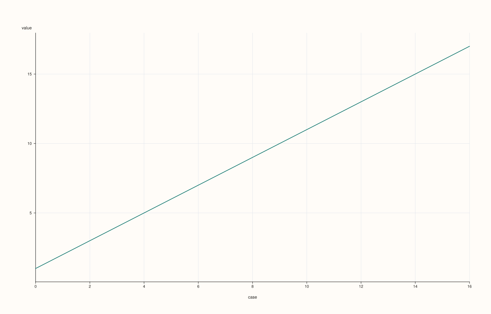

SlatePlotAccessor::auto_plot¶
Back to SlatePlotAccessor API Reference
Signatures¶
SlatePlotAccessor::auto_plot() const -> pluss::pl::Studio
SlatePlotAccessor::auto_plot(const AutoPlotOptions& options) const -> pluss::pl::Studio
What It Does¶
Picks a chart type automatically for the bound slate and delegates to the corresponding
method on this same accessor — a much smaller decision tree than
DataFramePlotAccessor::auto_plot’s, since a
single Slate has none of the multi-feature routing questions (feature count, hue
candidates, non-negativity) the 2D accessor’s tree branches on.
Important
The full decision tree — just two rules
The bound slate has explicit row labels, and 16 or fewer rows. Routes to
bar().Everything else (no explicit row labels, or more than 16 rows). Routes to
line().
Both routed-to calls use their own zero-argument overload — no companion x slate is
ever passed through, even when one exists conceptually.
The two-argument overload’s AutoPlotOptions is the same currently-empty struct
documented on the 2D accessor’s page; it has no effect on routing or rendering today.
Parameters¶
options (AutoPlotOptions)
Currently empty; reserved for future routing controls.
Returns¶
pluss::pl::Studio
Whatever the routed-to method returns — either bar()’s or
line()’s figure shape, depending on which rule fired.
Examples¶
Example 1. Explicit row labels, few rows: routes to bar().
using namespace pluss::table;
auto revenue = Slate(pluss::make_series({100.0, 120.0, 90.0, 150.0}))
.label().set(Slate(pluss::make_note({"Jan", "Feb", "Mar", "Apr"})));
auto chart = revenue.plot().auto_plot();
chart.show();
revenue has explicit (Note-kind) row labels and only 4 rows (≤ 16), so this is
equivalent to revenue.plot().bar().

Example 2. No explicit row labels: routes to line().
auto temperature = Slate(pluss::make_series({18.0, 19.5, 21.0, 20.5, 22.0}));
auto chart = temperature.plot().auto_plot();
chart.show();
temperature has no explicit row labels, so this is equivalent to
temperature.plot().line(), regardless of row count.

Notes¶
Only two routing rules exist — see the important callout above; contrast the much larger decision tree on
DataFramePlotAccessor::auto_plot.Every branch delegates to another zero-argument method on this same accessor —
auto_plot()performs no rendering of its own.AutoPlotOptionsis currently empty and has no effect.Returns a
pluss::pl::Studio— seeline()for how to view or save the result.
See Also¶
DataFramePlotAccessor::auto_plot: the multi-feature counterpart with a much larger routing decision tree.SlatePlotAccessor::brief: a fixed textual summary instead of an automatically chosen chart type.SlatePlotAccessor::bar/line: the two methodsauto_plot()can route to.